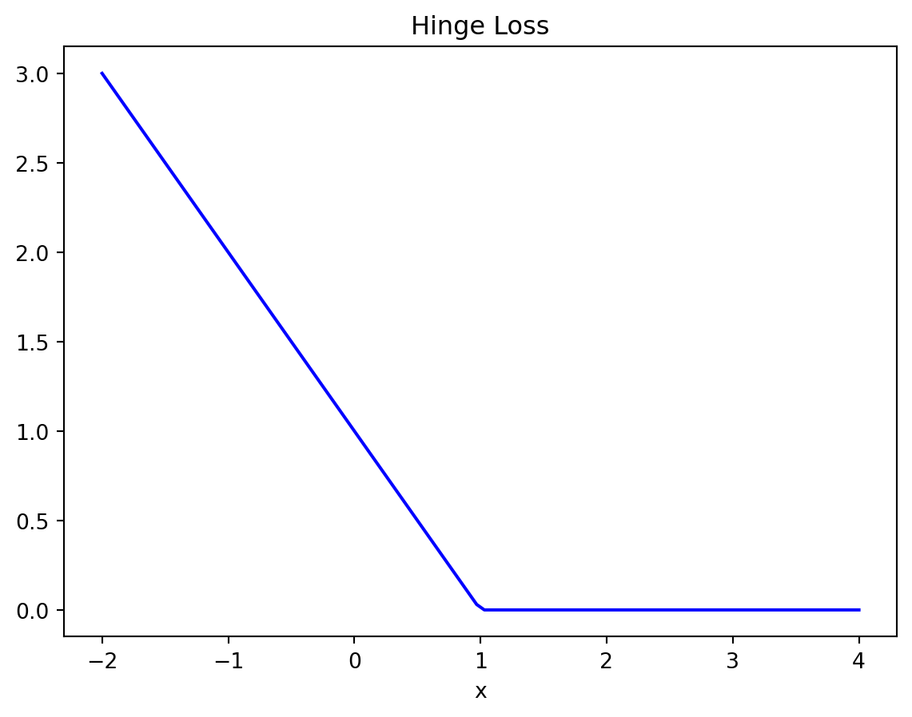

# Plot of a hinge function
import numpy as np
import matplotlib.pyplot as plt
%matplotlib inline
x = np.linspace(-2, 4, 100)
y = np.zeros(100)
for i in range(100):
y[i] = max(0, 1-x[i])
plt.plot(x, y, 'b-')
plt.xlabel('x')
plt.title('Hinge Loss');